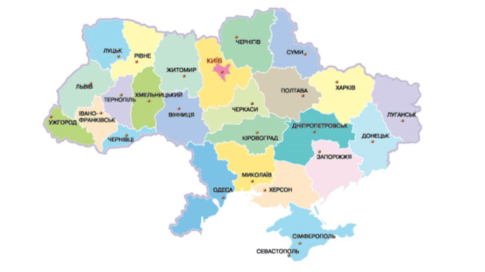

Цікаві міста
Історичні місця
Містичні місця
Сучасні місця
Карта
Тут можете дізнатися про нові місця
Більше інформації про вже відомі вам
Знайти для себе нове місце досліджень
На карті ви можете дізнатися про незнайому вам область
